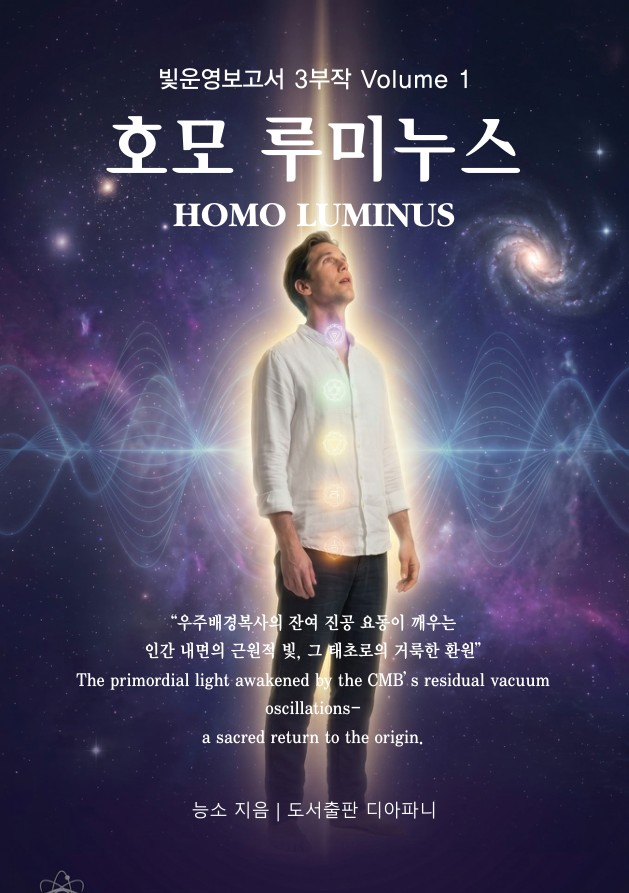

Volume 1
호모 루미누스
Homo Luminus — 빛나는 사람
우주에 편재한 우주배경복사(CMB)와 태양빛운영을 하나의 근원적 장으로 바라보며, 그 속에서 일어나는 진공광의 광휘 공진이 인간 존재를 어떻게 흔들고 깨우는지를 탐색하는 『빛운영 보고서 3부작』의 첫 번째 책. 빛을 이해하는 인간을 넘어, 빛의 공진 속에서 깨어나는 인간에 대한 첫 번째 보고서입니다.
발행